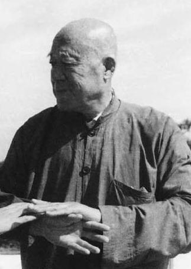

汪永泉

汪永泉，1904-1987 年，号“在山”，原北京协和医院职工，北京市武术协会副主席。
汪父汪崇禄（溥伦贝子府总管家）是杨健侯的弟子，并经常负责代学代教贝勒爷。汪永泉七岁开始跟随其父向杨健侯、杨少侯父子学习拳艺，因体格魁梧、聪明好学，备受杨家父子青睐，并常为少侯展示拳艺当陪练，从中悟道。1917年，杨健侯指定汪公由杨澄甫指导学习，直至杨澄甫1928年南下为止。在杨家门里有机会向杨健侯父子三人学过太极拳的人或许没有第二人，他真实地继承了杨家太极真功的精华。
汪公练习拳架特点是：舒适、开展、美观、大方；推手发劲乃继承了杨少侯之衣钵，充分发挥出“动中求静，以静制动”的原理，特别体现出了杨式太极拳刚柔相济、以柔克刚的原始内涵，使弹簧力一类的独特功夫达到神奇的境界。
1926年起汪公在“今是中学”教拳，后1934年开始在协和医院进行传授，从学者众多。朱怀元、张孝达等由此跟随汪公终生。1957年在众多学生中有朱怀元、孙德善、张广龄、高占魁、张孝达成为汪公的第一批入室弟子。1977年汪公在中国社会科学院开始重新教拳，院内有许多中老年人一起参加了这项业余活动。1980年，孙德明、齐一、王平凡、孙耕夫、丁冠之、彭诚等成为第二批入室弟子。比较用功的还有魏树仁，青年卢志明也颇受汪公器重。
1990年于汪公仙逝近三周年之际，“杨式太极拳述真”一书作为汪公遗作与世人见面，此书详述了杨式太极拳的精髓，对人们了解杨式太极拳的真谛有很大帮助，可说是一部太极拳经典之作。这是汪公晚年的重大成就和贡献。
汪永泉不愧为杨式太极拳的一代宗师。他生前淡泊名利，安于清苦，献身拳艺，教学严谨，为人忠厚，以身作则抵制拳界搬弄是非之风。他付出全部心血和精力，深入继承杨氏太极拳，艰苦传授六十年，晚年并著书立说、公开内中奥秘，从而形成杨氏太极拳汪传一脉，这是他一生的重大成就，也是对中国武术事业所做出的卓越贡献。
2006年4月，汪脉传人在北京故宫太和殿联合召开《纪念汪永泉老师》大会，会后向北京武协报批成立了《永泉太极拳研究会》http://www.yqyjh.com/，决心为继承汪公遗志、拯救和发扬汪传养生与技击功夫、使杨氏原创太极拳技艺进一步走向世界，谱写出新篇章。
Source:
http://baike.baidu.com/view/2130202.htm?fr=ala0_1
汪永泉大师晚年发人视频.m4v
汪永泉傳楊氏太極拳研究會(香港)
http://www.taiqiquan.org.hk/